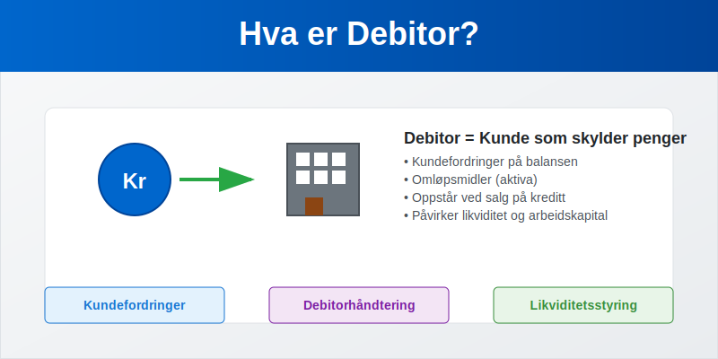
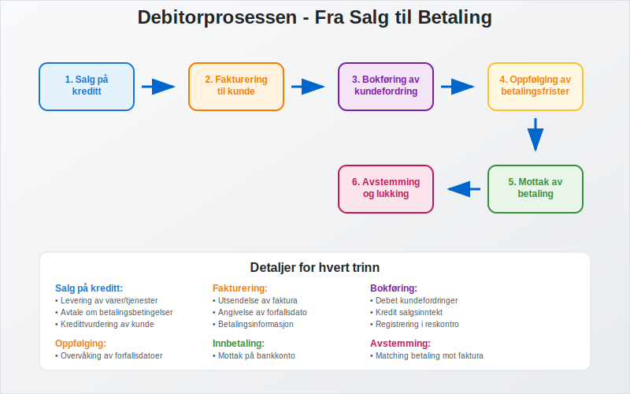
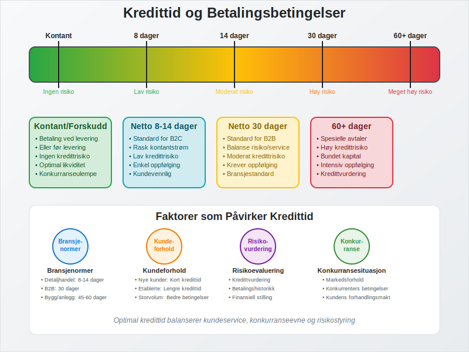
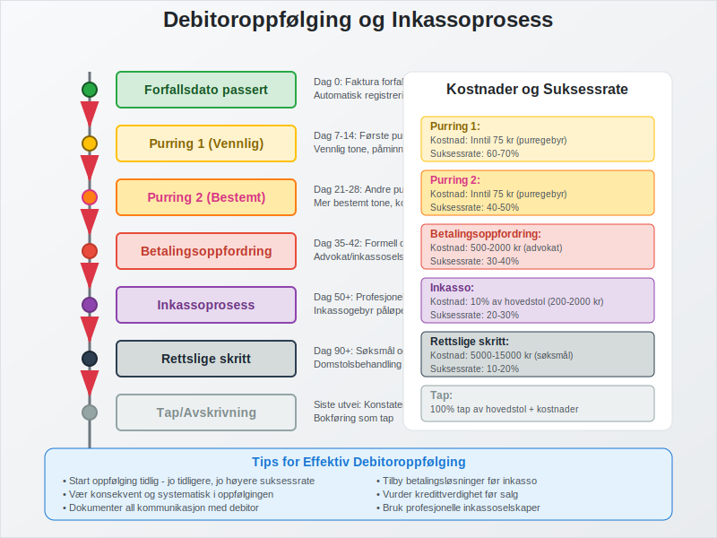
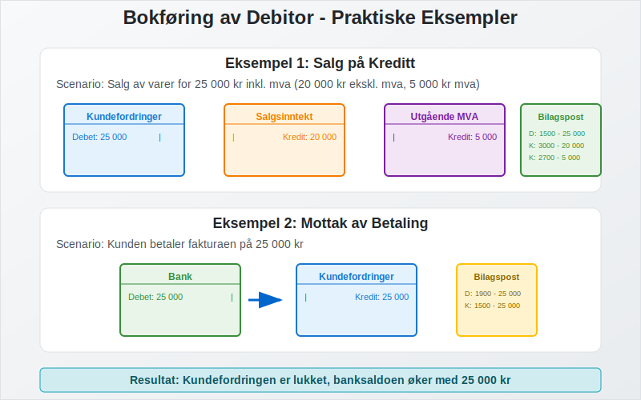
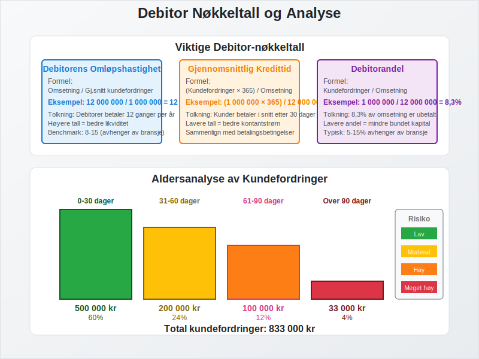
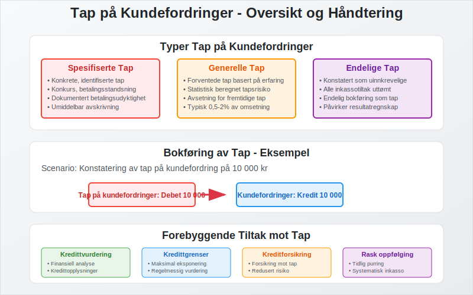
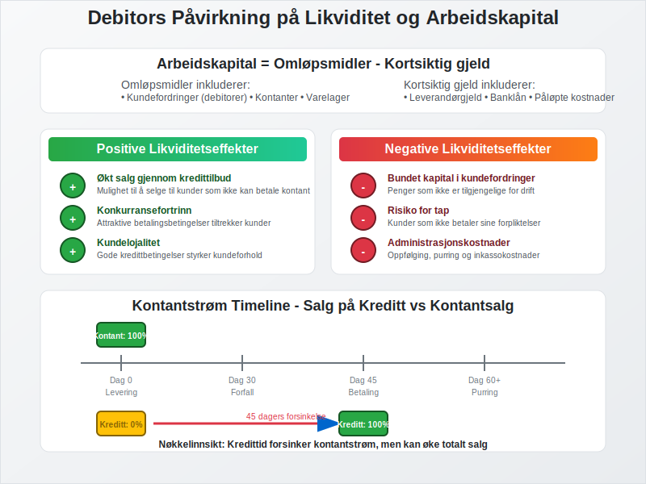
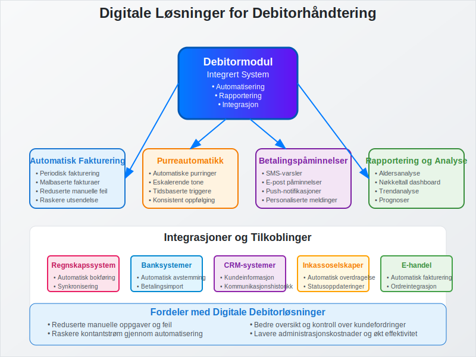
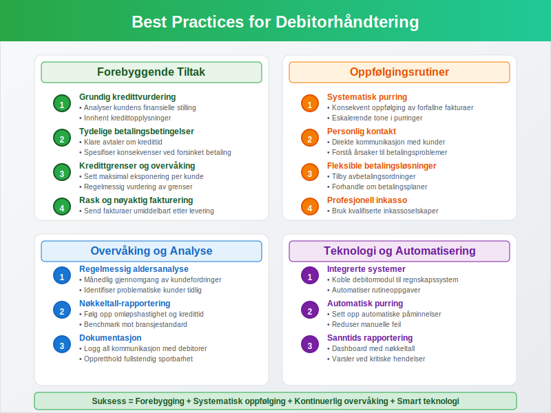

Debitor er et sentralt begrep i regnskap og bokføring som refererer til kunder som skylder penger til virksomheten for leverte varer eller tjenester. Debitor representerer kundefordringer og er en viktig del av selskapets aktiva. Effektiv debitorhåndtering er avgjørende for å opprettholde god likviditet og arbeidskapital.
Hva er Debitor?
Debitor er en person eller virksomhet som skylder penger til din bedrift for varer eller tjenester som er levert, men ikke betalt. I regnskapssammenheng registreres debitorer som kundefordringer på balansen under omløpsmidler. Debitorposten oppstår når du selger på kreditt, det vil si at kunden får varene eller tjenestene før betaling skjer.

Forskjellen mellom Debitor og Kreditor
Det er viktig å skille mellom debitor og kreditor:
| Begrep | Definisjon | Regnskapspost | Balanseplassering |
|---|---|---|---|
| Debitor | Kunder som skylder deg penger | Kundefordringer | Aktiva (omløpsmidler) |
| Kreditor | Leverandører du skylder penger | Leverandørgjeld | Passiva (kortsiktig gjeld) |
Når leverandører gir kredittid til sine kunder, oppstår leverandørkreditt - en av de mest utbredte formene for kortsiktig finansiering i næringslivet. Dette skaper en kreditor-debitor-relasjon hvor leverandøren blir kreditor og kunden blir debitor.
Debitorprosessen
Debitorprosessen starter når du leverer varer eller tjenester på kreditt og ender når betalingen er mottatt:

Trinn i Debitorprosessen
- Salg på kreditt: Levering av varer/tjenester uten umiddelbar betaling gjennom fakturasalg
- Fakturering: Utsendelse av faktura til kunde
- Registrering: Bokføring av kundefordring
- Oppfølging: Overvåking av betalingsfrister
- Innbetaling: Mottak av betaling fra kunde
- Avstemming: Matching av betaling mot faktura
Kredittid og Betalingsbetingelser
Kredittid er tiden kunden har til å betale fakturaen. Vanlige betalingsbetingelser i Norge inkluderer:
Standard Betalingsbetingelser
| Betingelse | Beskrivelse | Kredittid |
|---|---|---|
| Netto 8 dager | Betaling innen 8 dager | 8 dager |
| Netto 14 dager | Betaling innen 14 dager | 14 dager |
| Netto 30 dager | Betaling innen 30 dager | 30 dager |
| Kontant | Betaling ved levering | 0 dager |
| Forskudd | Betaling før levering | Negativ kredittid |

Faktorer som Påvirker Kredittid
- Bransjenormer: Ulike bransjer har forskjellige standarder
- Kundeforhold: Etablerte kunder kan få lengre kredittid
- Risikoevaluering: Kredittverdige kunder får bedre betingelser
- Konkurransesituasjon: Markedsforhold påvirker betingelsene
- Kontantstrømbehov: Selskapets likviditetssituasjon
Debitoroppfølging og Inkasso
Systematisk oppfølging av debitorer er essensielt for å minimere tap og opprettholde god likviditet. For en omfattende forståelse av inkassovirksomhet, inkludert juridiske rammer, prosedyrer, kostnader og rettigheter, anbefaler vi vår detaljerte guide til inkasso.

Oppfølgingstrinn
- Purring 1: 7-14 dager etter forfall
- Purring 2: 14-21 dager etter første purring
- Betalingsoppfordring: Formell oppfordring med advokat
- Inkasso: Enten egeninkasso eller overdragelse til inkassoselskap
- Rettslige skritt: Søksmål og utlegg
Bedrifter kan velge mellom egeninkasso hvor de selv driver inkassovirksomhet, eller å overlate oppgaven til profesjonelle inkassoselskaper. Valget avhenger av bedriftens ressurser, juridiske kompetanse og ønsket kontrollnivå.
Inkassokostnader
Ved forsinket betaling påløper flere typer kostnader som debitorer må dekke:
| Type kostnad | Beløp | Hjemmel |
|---|---|---|
| Morarente | Referanserente + 8% | Forsinkelsesrenteloven |
| Purregebyr | Inntil 75 kr | Inkassoloven § 10a |
| Inkassogebyr | 10% av hovedstol (min 200 kr, maks 2000 kr) | Inkassoloven § 10a |
| Advokatkostnader | Etter regning | Inkassoloven § 9 |
Viktig: Morarente påløper automatisk fra forfallsdato uten krav om påminnelse, mens andre kostnader krever aktiv oppfølging fra kreditor.
Bokføring av Debitorer
Debitorposter bokføres som debet på kundefordringskontoen:
Eksempel: Salg på Kreditt
Ved salg av varer for 25 000 kr inkl. mva (20 000 kr ekskl. mva):
| Konto | Debet | Kredit |
|---|---|---|
| Kundefordringer | 25 000 | |
| Salgsinntekt | 20 000 | |
| Utgående mva | 5 000 |
Eksempel: Mottak av Betaling
Når kunden betaler fakturaen:
| Konto | Debet | Kredit |
|---|---|---|
| Bank | 25 000 | |
| Kundefordringer | 25 000 |

Debitoranalyse og Nøkkeltall
Regelmessig analyse av debitorportføljen gir viktig innsikt i virksomhetens kredittstyring. En systematisk kundeliste er grunnlaget for effektiv debitoranalyse:
Viktige Debitor-nøkkeltall
| Nøkkeltall | Formel | Hva det måler |
|---|---|---|
| Debitorens omløpshastighet | Omsetning / Gjennomsnittlig kundefordringer | Hvor raskt debitorer betaler |
| Gjennomsnittlig kredittid | (Kundefordringer × 365) / Omsetning | Antall dager til betaling |
| Debitorandel | Kundefordringer / Omsetning | Andel av omsetning som er ubetalt |

Aldersanalyse av Debitorer
En aldersanalyse viser fordelingen av kundefordringer etter hvor lenge de har vært utestående:
| Aldersgruppe | Beløp | Andel | Risiko |
|---|---|---|---|
| 0-30 dager | 500 000 | 60% | Lav |
| 31-60 dager | 200 000 | 24% | Moderat |
| 61-90 dager | 100 000 | 12% | Høy |
| Over 90 dager | 33 000 | 4% | Meget høy |
Tap på Kundefordringer
Ikke alle debitorer betaler sine forpliktelser. Virksomheter må derfor ta høyde for tap på kundefordringer:
Typer Tap
- Spesifiserte tap: Konkrete, identifiserte tap
- Generelle tap: Forventede tap basert på historisk erfaring
- Endelige tap: Tap som er konstatert som uinnkrevelige
Bokføring av Tap
Ved konstatering av tap på 10 000 kr:
| Konto | Debet | Kredit |
|---|---|---|
| Tap på kundefordringer | 10 000 | |
| Kundefordringer | 10 000 |

Debitors Påvirkning på Likviditet
Debitorer har direkte påvirkning på selskapets likviditet og arbeidskapital:
Likviditetseffekter
- Positiv effekt: Økt salg gjennom kredittilbud
- Negativ effekt: Bundet kapital i kundefordringer
- Risiko: Potensielle tap ved manglende betaling
Arbeidskapitalberegning
Arbeidskapital = Omløpsmidler - Kortsiktig gjeld
Hvor kundefordringer (debitorer) utgjør en vesentlig del av omløpsmidlene.

Kredittvurdering og Risikostyring
Før du gir kreditt til nye kunder, bør du gjennomføre en kredittvurdering:
Kredittvurderingskriterier
- Finansiell stilling: Analyse av kundens regnskap
- Betalingshistorikk: Tidligere betalingsadferd
- Bransjerisiko: Risiko knyttet til kundens bransje
- Referanser: Innhenting av kredittopplysninger
Risikobegrensende Tiltak
| Tiltak | Beskrivelse | Effekt |
|---|---|---|
| Kredittgrense | Maksimalt utestående beløp per kunde | Begrenser eksponering |
| Kreditforsikring | Forsikring mot kundetap | Reduserer tapsrisiko |
| Forskuddsbetaling | Betaling før levering | Eliminerer kredittrisiko |
| Bankgaranti | Garanti fra kundens bank | Sikrer betaling |
Digitale Løsninger for Debitorhåndtering
Moderne virksomheter bruker digitale verktøy for effektiv debitorhåndtering:
Funksjoner i Debitormoduler
- Kundereskontro: Detaljert sporing av alle kundetransaksjoner
- Kundekartotek: Systematisk lagring og administrasjon av kundeinformasjon
- Kundelister: Oversikt over alle kunder med betalingshistorikk og risikostyring
- Automatisk fakturering: Reduserer manuelle feil
- Purreautomatikk: Systematisk oppfølging
- Betalingspåminnelser: SMS og e-post varsler
- Rapportering: Aldersanalyse og nøkkeltall
- Integrasjon: Kobling til regnskapssystem

Juridiske Aspekter
Debitorhåndtering er regulert av flere lover og forskrifter:
Relevant Lovgivning
- Inkassoloven: Regulerer inkassoprosessen
- Forbrukerkjøpsloven: Beskytter forbrukere
- Kjøpsloven: Regulerer kommersielle kjøp
- Forsinkelsesrenteloven: Regulerer renter ved forsinket betaling
Foreldelsesfrister
| Type fordring | Foreldelsestid | Lovhjemmel |
|---|---|---|
| Vanlige fordringer | 3 år | Foreldelsesloven § 2 |
| Løpende leveranser | 3 år fra siste levering | Foreldelsesloven § 2 |
| Håndverkstjenester | 3 år | Foreldelsesloven § 2 |
Best Practices for Debitorhåndtering
For å optimalisere debitorhåndteringen bør virksomheter følge disse anbefalingene:
Forebyggende Tiltak
- Tydelige betalingsbetingelser: Klare avtaler om kredittid
- Kredittvurdering: Systematisk vurdering av nye kunder
- Løpende overvåking: Regelmessig oppfølging av utestående
- Rask fakturering: Umiddelbar fakturering etter levering
Oppfølgingsrutiner
- Systematisk purring: Konsekvent oppfølging av forfallne fakturaer
- Personlig kontakt: Direkte kommunikasjon med kunder
- Fleksible betalingsløsninger: Tilbud om avbetalingsordninger
- Profesjonell inkasso: Bruk av kvalifiserte inkassoselskaper

Debitor i Ulike Bransjer
Debitorhåndtering varierer mellom bransjer basert på karakteristika og risikoprofil:
Detaljhandel
- Kort kredittid: Ofte kontantbetaling eller kort kreditt
- Høy volum: Mange små transaksjoner
- Lav risiko: Begrenset eksponering per kunde
B2B-virksomheter
- Lengre kredittid: 30-60 dager er vanlig
- Større beløp: Færre, men større transaksjoner
- Høyere risiko: Større potensielle tap
Tjenesteyting
- Variabel kredittid: Avhenger av tjenestetype
- Prosjektbasert: Ofte delbetaling underveis
- Kontraktstyrt: Betalingsbetingelser i kontrakter
Internasjonale Debitorer
Ved salg til utlandet kommer tilleggsutfordringer:
Spesielle Hensyn
- Valutarisiko: Svingninger i valutakurser
- Kulturelle forskjeller: Ulike betalingstradisjoner
- Juridiske utfordringer: Forskjellige rettssystemer
- Inkassovansker: Komplisert grenseoverskridende inkasso
Risikobegrensende Tiltak
- Remburs: Bankgarantert betaling
- Eksportkredittforsikring: Forsikring mot utenlandske kunder
- Forskuddsbetaling: Eliminerer kredittrisiko
- Lokale partnere: Bruk av lokale distributører
Sammendrag
Debitor er et fundamentalt begrep i regnskap som refererer til kunder som skylder penger til virksomheten. Effektiv debitorhåndtering krever:
- Systematisk kredittvurdering av nye kunder
- Tydelige betalingsbetingelser og kredittider
- Konsekvent oppfølging av utestående fordringer
- Profesjonell inkassohåndtering ved betalingsproblemer
- Regelmessig analyse av debitorportføljen
God debitorhåndtering er avgjørende for å opprettholde sunn likviditet og minimere tap på kundefordringer. Ved å følge best practices og bruke moderne digitale verktøy kan virksomheter optimalisere sin debitorprosess og styrke sin finansielle posisjon.
Debitorhåndtering er ikke bare et regnskapsteknisk spørsmål, men en strategisk aktivitet som påvirker både kundeforhold og lønnsomhet. Balansen mellom å tilby attraktive kredittbetingelser og å opprettholde god risikokontroll er nøkkelen til suksess.